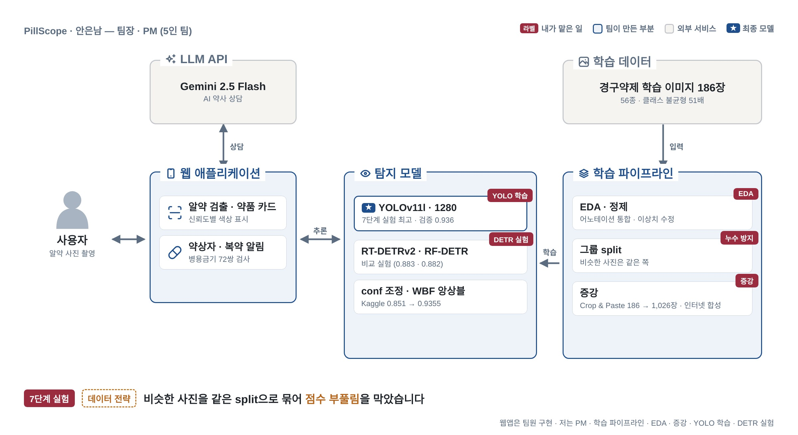

PillScope · Object detection for oral medication images
The model locates each pill in photos of 3–4 pills and names it among 56 classes. There were 186 training images and a 51× class imbalance (153 vs. 3).
What I did
- Role
- Team lead · PM · Model experiments
- Period
- Apr – May 2026
- Team
- Team of 5 · Codeit Sprint team project
Team
Managed a 7-stage experiment plan and roles as team lead and PM
Pipeline
Built the shared COCO → YOLO training pipeline, trained YOLOv11l and ran DETR experiments
Data
Crop-and-paste augmentation; grouped near-duplicate shots into the same split to prevent leakage
Code I wrote
COCO → YOLO pipeline, EDA, preprocessing and augmentation notebooks (members/eunnam)
Results
Screens

System architecture
Training pipeline connected to the service

Burgundy labels mark the parts I owned. Click the image to enlarge it. (Diagram in Korean.)
Key decisions
1. Fix the split before trusting the score
Why: Near-duplicate shots split across training and validation inflate the score.
What changed: Grouped near-duplicate shots into the same split.
Result: Validation scores became trustworthy enough to compare models.
2. Grow the rare pills directly
Why: Some rare pills were never detected.
What changed: Cropped and pasted under-represented pills and composited web pill images onto the competition background.
Result: The training set grew to 1,026 images and the rare pills became detectable.
Limitations
Training-set sizes differed by model (1,116 / 1,206 / 186 images), so the model comparison is not controlled.